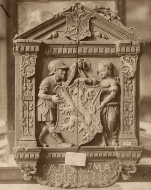
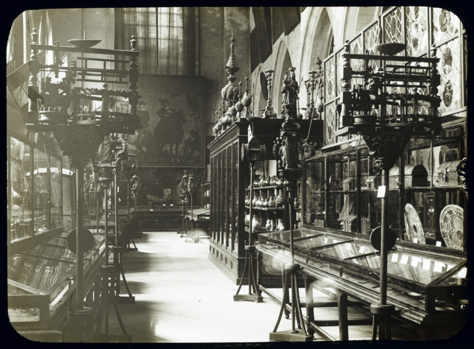

Over de verzamelgeschiedenis van de STAMcollectie verscheen in het najaar van 2016 een rijk geïllustreerd boek, samengesteld door STAMmedewerker Wout De Vuyst, geschreven door Patrick De Rynck en vormgegeven door de STAMhuisstijlvormgevers Dooreman & Dams. Na meer dan 180 jaar verzamelen, vallen heel wat boeiende verhalen achter de objecten te vertellen.
De STAMcollectie vindt, zoals de meeste museumverzamelingen, haar oorsprong in de vroege 19de eeuw. Toen gingen geschiedkundigen intens op zoek naar alles wat van betekenis was voor het regionale en nationale verleden.
In 1833 richtten de leden van de Commissie voor Monumenten en Stadsgezichten van Gent het oudheidkundig museum ‘Musée historique belge’ op. Dit kaderde volledig in de romantisch-patriottische visie van deze jaren, waarin men grote belangstelling had voor lokale en nationale geschiedenis. De collectiestukken werden geschonken door de leden van de Commissie.
Gaandeweg bouwde men dankzij bescheiden bijdragen van weldoeners in korte tijd een heterogene verzameling op. Door belangrijke toevoegingen uit het stedelijke patrimonium groeide ze uit tot een zeer gevarieerd, interessant en merkwaardig geheel, met bijzondere focus op alles wat met Gent te linken was. Het jaar 1848 was een belangrijke mijlpaal voor de collectie: toen schonk het Gentse stadsbestuur verschillende belangrijke objecten uit het stedelijke patrimonium aan het museum. Vanaf 1884 werd het museum een stedelijke instelling en kreeg het zijn eerste conservator.
Op 19de-eeuwse veilingen van vermaarde Gentse kunstverzamelingen slaagde men erin unieke stukken over de Gentse ambachten en objecten uit het dagelijkse leven te verwerven. In de loop van de 19de en 20ste eeuw ging bij de collectievorming grote aandacht naar stukken die typerend zijn voor (de geschiedenis van) Gent. De collectie werd aangevuld door het afstaan van, ruilen met of in bruikleen geven van objecten aan andere Gentse instellingen en musea, en door zorgvuldige aankopen, schenkingen, legaten en het aangaan van permanente bruiklenen.
In de loop van de 20ste eeuw zette de faam van deze collectie de Gentse burgerij aan tot talloze schenkingen en legaten. Een rijke wapenverzameling, objecten rond vrijmetselarij en Chinese kunst behoren sindsdien tot de verzameling. De Gentse militaire gilden gaven een deel van hun buitengewoon kunstbezit permanent in bruikleen.
Doorheen de jaren werd de collectie op nogal wat plekken ondergebracht: van het klooster van de Jezuïeten in de Volderstraat naar het stadhuis (1838), vervolgens naar de kerk van de Baudelo-abdij aan de Ottogracht (1874) en dan weer naar de kerk van de geschoeide Karmelieten in de Langesteenstraat (1884). Ten slotte vond de verzameling een gepast onderkomen in de prachtige gebouwen van de Bijlokeabdij (1928).
Op 11 september 2005 ging het Bijlokemuseum dicht, op 9 oktober 2010 opende het STAM-Stadsmuseum Gent. Na meer dan 180 jaar verzamelen, na selecties en heroriënteringen en via uitwisselingen tussen verschillende stedelijke museale collecties beschikken we voor Gent met de Bijlokecollectie, nu de STAMcollectie, over een belangrijke verzameling waarin alle kunstdisciplines vertegenwoordigd zijn.